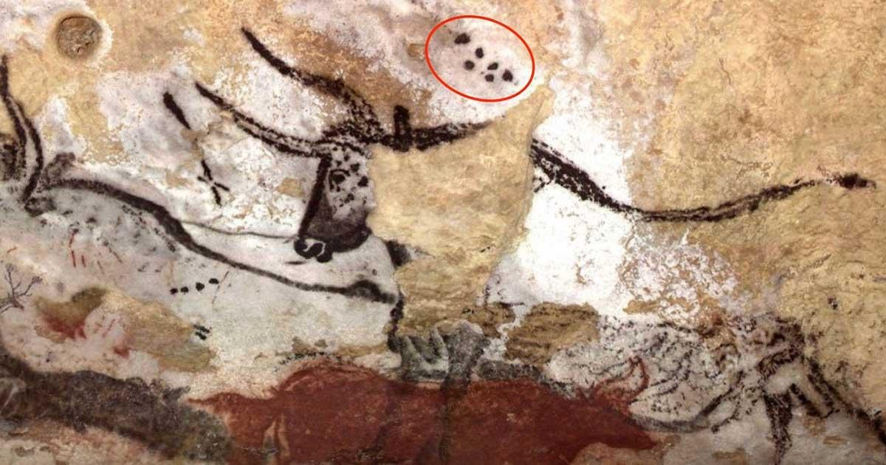
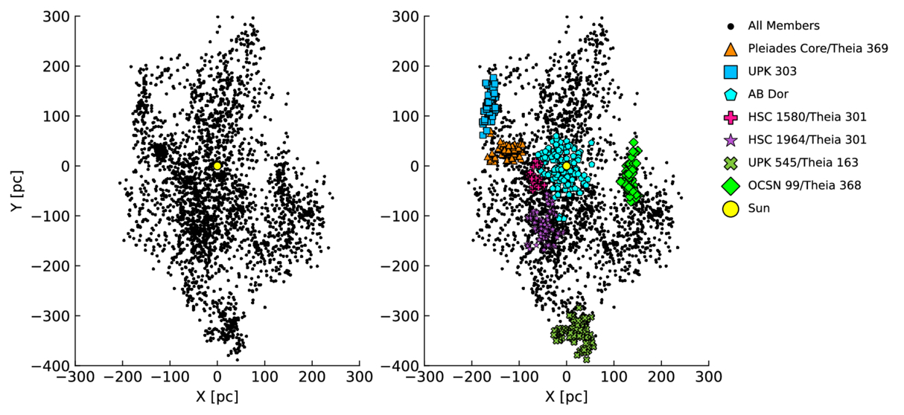

Andrew Mann

Our group is interested in clusters for a range of reasons. A big one is that it's a lot easier to measure the ages of stars in a cluster, and we are interested in measuring ages of planets (for studying how planets evolve). Clusters are also a good place to fine-tune our methods for age-dating field stars and calibrating stellar models. We also know that evolved open clusteres generally form from higher-mass structures that break up as they orbit the Galaxy. So we are interested in both finding new clusters and identifying all the members of known clusters. This is part of a massive survey to map out young stars near the Sun, but to start we decided to target the Pleiades. The goal was to see if other known groups were connected to the Pleiades and just how large the complex was. To this end, we combine position and motion data from ESA's Gaia mission with stellar rotation rates from NASA's TESS satellite. People have done the former before - Gaia astrometry is the main tool for identifying clusters. The new part was the TESS piece. What this adds is a proxy for age - young stars spin faster than their older counterparts (see below), so we can use rotation to focus on just the stars with ages close to that of the Pleiades.
The combination of position, motion, and age (via rotation) provide a very clear structure:

We also did a number of checks on this, including abundances, CMD-based ages, and kinematic back integrations (the complex was smaller in the past). Overall, it paints a very clear picture - the Pleiades is just the compact remnant core of a much larger structure spanning at least 500pc and harboring tens of thousands of additional stars.
Read more: